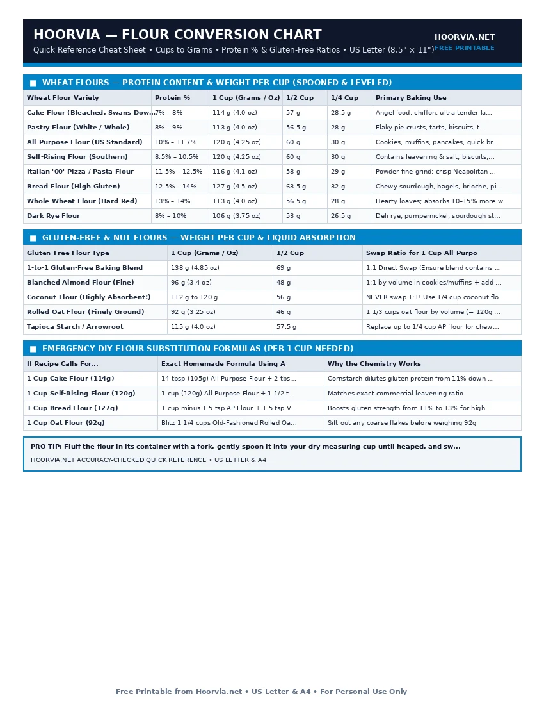

Flour Weight & Protein Conversion Chart (Cups to Grams)
Spooning and leveling yields the professional standard of 120 grams per cup of all-purpose flour. Weigh your flour in grams or use the exact DIY flour swap formulas below.
| Wheat Flour Variety | Protein % | 1 Cup (Grams / Oz) | 1/2 Cup | 1/4 Cup | Primary Baking Use |
|---|---|---|---|---|---|
| Cake Flour (Bleached, Swans Down) | 7% – 8% | 114 g (4.0 oz) | 57 g | 28.5 g | Angel food, chiffon, ultra-tender layer cakes |
| Pastry Flour (White / Whole) | 8% – 9% | 113 g (4.0 oz) | 56.5 g | 28 g | Flaky pie crusts, tarts, biscuits, turnovers |
| All-Purpose Flour (US Standard) | 10% – 11.7% | 120 g (4.25 oz) | 60 g | 30 g | Cookies, muffins, pancakes, quick breads |
| Self-Rising Flour (Southern) | 8.5% – 10.5% | 120 g (4.25 oz) | 60 g | 30 g | Contains leavening & salt; biscuits, cobblers |
| Italian '00' Pizza / Pasta Flour | 11.5% – 12.5% | 116 g (4.1 oz) | 58 g | 29 g | Powder-fine grind; crisp Neapolitan pizza |
| Bread Flour (High Gluten) | 12.5% – 14% | 127 g (4.5 oz) | 63.5 g | 32 g | Chewy sourdough, bagels, brioche, pizza |
| Whole Wheat Flour (Hard Red) | 13% – 14% | 113 g (4.0 oz) | 56.5 g | 28 g | Hearty loaves; absorbs 10–15% more water |
| Dark Rye Flour | 8% – 10% | 106 g (3.75 oz) | 53 g | 26.5 g | Deli rye, pumpernickel, sourdough starter booster |
| Gluten-Free Flour Type | 1 Cup (Grams / Oz) | 1/2 Cup | Swap Ratio for 1 Cup All-Purpose Flour |
|---|---|---|---|
| 1-to-1 Gluten-Free Baking Blend | 138 g (4.85 oz) | 69 g | 1:1 Direct Swap (Ensure blend contains xanthan gum) |
| Blanched Almond Flour (Fine) | 96 g (3.4 oz) | 48 g | 1:1 by volume in cookies/muffins + add 1/2 tsp binder |
| Coconut Flour (Highly Absorbent!) | 112 g to 120 g | 56 g | NEVER swap 1:1! Use 1/4 cup coconut flour + 1 extra egg |
| Rolled Oat Flour (Finely Ground) | 92 g (3.25 oz) | 46 g | 1 1/3 cups oat flour by volume (= 120g by weight) |
| Tapioca Starch / Arrowroot | 115 g (4.0 oz) | 57.5 g | Replace up to 1/4 cup AP flour for chewy crispness |
| If Recipe Calls For... | Exact Homemade Formula Using All-Purpose Flour | Why the Chemistry Works |
|---|---|---|
| 1 Cup Cake Flour (114g) | 14 tbsp (105g) All-Purpose Flour + 2 tbsp (16g) Cornstarch | Cornstarch dilutes gluten protein from 11% down to 8.5% |
| 1 Cup Self-Rising Flour (120g) | 1 cup (120g) All-Purpose Flour + 1 1/2 tsp Baking Powder + 1/4 tsp Salt | Matches exact commercial leavening ratio |
| 1 Cup Bread Flour (127g) | 1 cup minus 1.5 tsp AP Flour + 1.5 tsp Vital Wheat Gluten | Boosts gluten strength from 11% to 13% for high rise |
| 1 Cup Oat Flour (92g) | Blitz 1 1/4 cups Old-Fashioned Rolled Oats in blender 45 sec | Sift out any coarse flakes before weighing 92g |
💡 Chef's Pro Tip: Fluff the flour in its container with a fork, gently spoon it into your dry measuring cup until heaped, and sweep the back of a straight knife across the rim.
Printable Cheat Sheet Preview (US Letter & A4)
High-contrast, ink-saving layout designed for kitchen binders and refrigerator magnets. No sign-up required.

Understanding Flour Protein %: Why Bread Flour Makes Tough Cakes
Low protein (7%–9%) forms minimal gluten for tender cakes, while high protein (12.5%–14%) traps expanding yeast gas for chewy bread.
Frequently Asked Questions
Why do some websites say 1 cup of flour is 120g and others say 140g?
Professional pastry kitchens standardize on 120g for spooned-and-leveled flour, whereas dipping the cup packs 140g.
Can I substitute whole wheat flour 1:1 for all-purpose flour?
Up to 50% can be swapped directly. For 100%, add 2 extra tablespoons of liquid per cup.
Complete Baking & Pastry Reference Cluster (10 Free Sheets)
- 📄 Baking Ingredient Substitutions Cheat Sheet (#011)
- 📄 Baking Temperature Chart & Oven Heat Zones (#012)
- 📄 Baking Pan Size & Volume Conversion Chart (#013)
- 📄 Cake Pan Batter, Yield & Tier Serving Chart (#014)
- 📄 Cookie Baking Time, Temp & Scoop Size Chart (#015)
- 📄 Bread Internal Temperature & Doneness Guide (#016)
- 📄 Yeast Conversion Chart (Instant, Active & Fresh) (#017)
- 📄 Sugar & Liquid Sweetener Conversion Chart (#019)
- 📄 Baking Troubleshooting Diagnostic Chart (#020)